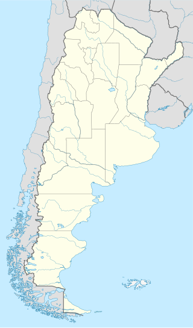
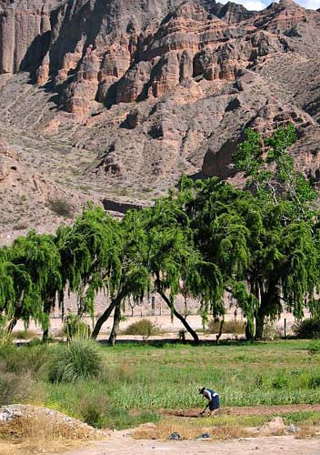
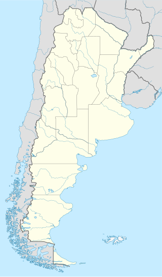
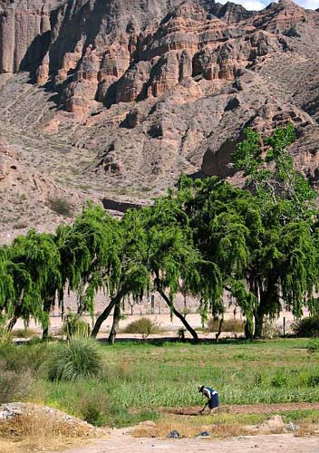

Cultura de Tilcara

>>>>> Ubicacion
Tilcara es un departamento que esta ubicado en la provincia de Jujuy en Argentina en el centro de la quebrada de Humahuaca. Su nombre proviene de los indígenas OMAGUACAS que habitaron esas tierras hace más de 900 años atras. Esta se caracteriza por tener una cultura extensa ya que sus pobladores se dedicaban ala agricultura y eran expertos en tejedores y alfareros como asi tambien practicaban la ganaderia de llamas utilizadas como animales de carga y para la provisión de lana y carne.
>>>>> Lugares Turisticos
*El Pucara
El Pucará de Tilcara es uno de los numerosos poblados prehispánicos que se ubican a lo largo de la Quebrada Jujeña. Este sitio arqueológico se encuentra ubicado sobre un cerro a 70 metros de altura aproximadamente en la margen izquierda del Río Grande, fue ocupado entre el año 1000 dC hasta la llegada de los españoles
*La Garganta del Diablo
Esta conformado por movimientos de placas tectónicas que forman un gran cañón donde se encuentran restos paleontológicos petrificados. Las imponentes paredes de roca se elevan hacia el cielo encauzando el Río Huasamayo. Una hermosa cascada se muestra al final del camino. Se encuentra ubicada a 5 km desde el centro del pueblo de Tilcara a través de un camino en el que se puede apreciar un paisaje único que va cambiando de color de acuerdo a la hora que lo recorra, con increíbles vistas.
 


